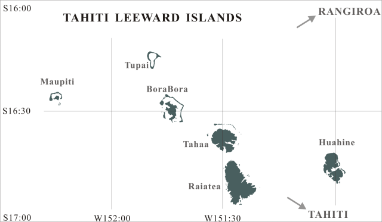

TAHITI LEEWARD SCENERY

Click the desired island

Maupiti is a small atoll located in the west of BoraBora.
I searched various photographs of the Maupiti to design this scenery.
The lagoon of Maupiti is extremely beautiful than
other beautiful atolls of French Polynesia.

This is a view of the entire Maupiti.
A form of the lagoon bears a strong resemblance to BoraBora.
The composition of the lagoon of Maupiti is very complex as well as BoraBora.

Tupai is a very small atoll located in the north of BoraBora.
When I design this scenery , I was not able to acquire detailed data of this atoll.
I found this atoll at the edge of the satellite image by NASA.
I designed this scenery based on that image.
Although it seemed that the lagoon has no channel linking it with the open sea,
a waterway may exist in a part of the atool.
This scenery is the photo-realistic version of Bora Bora. I designed BoraBora scenery based on the picture obtained by Mr. Kamui. The penetration processing of the lagoon has been improved along the specifications of FS2004.

Dawn of BoraBora

This picture is BoraBora from the airport side.
Many people will imagine BoraBora from a word of Tahiti.
The lagoon that spreads out between the reef and the island is impressed too beautifully.
More, The mountain where the spectacle on the island is impressed has peculiar shape.
Over 1600 pieces of polygons were used for the design of this island.
Tahaa from BoraBora side
Both of Tahaa and Huahine are islands with the very complicated coastline.
Tahaa drawn by the FS2004 default scenery
is the island of quite simple form.

Tahaa, view from the north side.
Raiatea is the greatest island in LeeWard islands.
The island on the opposite shore is Tahaa.
Raiatea and Tahaa form a twin island like a Tahiti island.
To tell the truth,
it is said that Raiatea was the center of an ancient Tahiti region.
when I had created the scenery of Raiatea and Tahaa,
I made a mistake in the design of mountains.

Huahine appears when heading for the east from Tahaa-Raiatea.
Huahine consists of two islands named Huahine Nui (on the north side)
and Huahine Iti (on the south side).
However, since two islands are only being separated by narrow pass,
they look like one island.
A lot of Maraes are scattered in surroundings of the Fauna Nui lake
(lower left side of this image), and it is filled with the air of mystery.
This picture is a scereen shot from the southwest.
As well as Tahaa，Huahine has very complicated coastlines.
Huahine, view from the southeast side
Raiatea is seen far away.